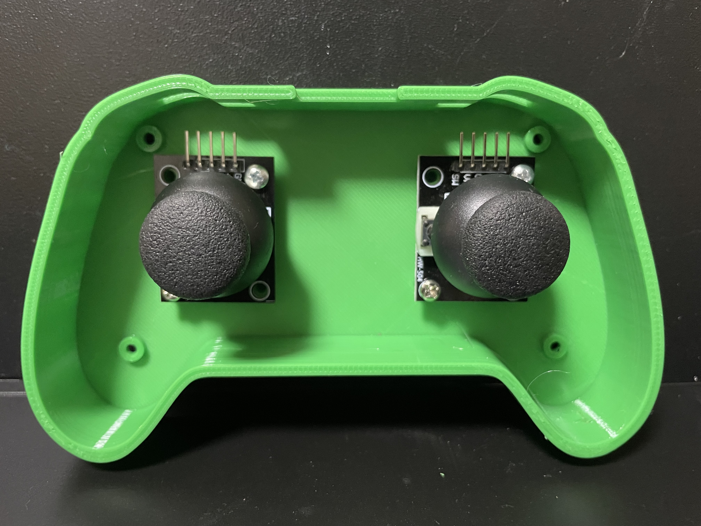
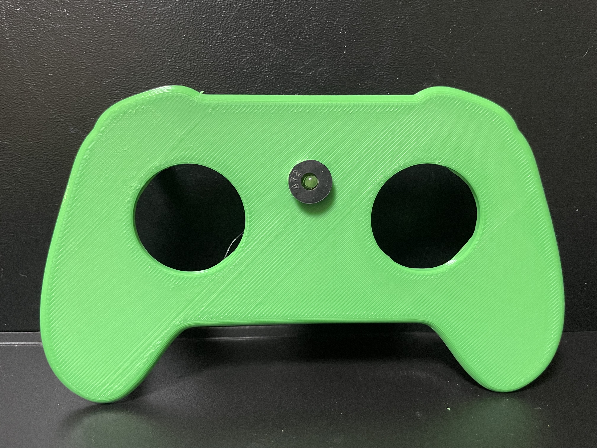
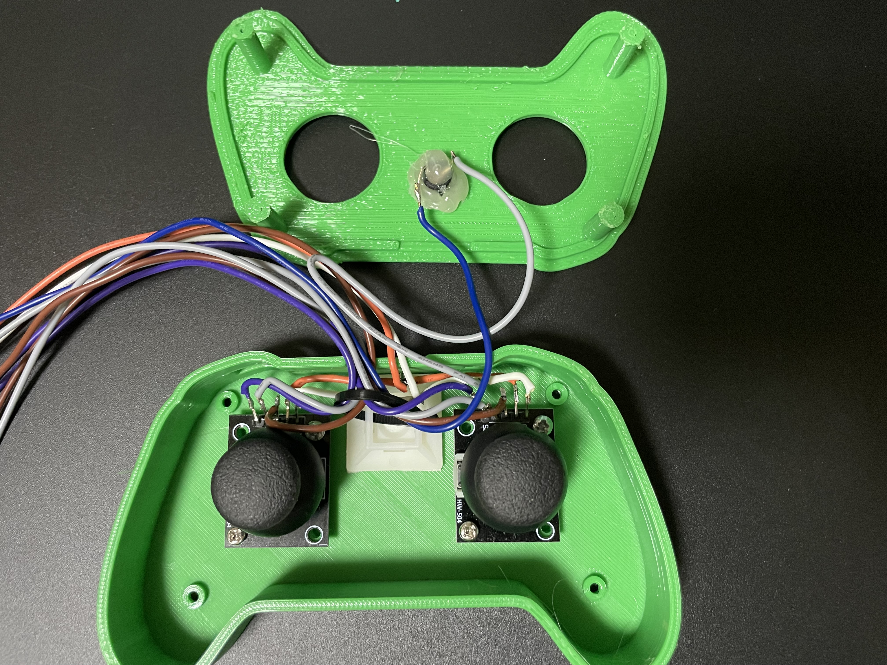
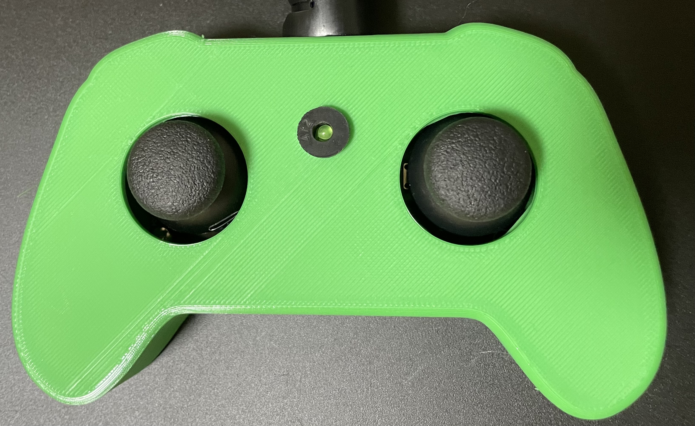
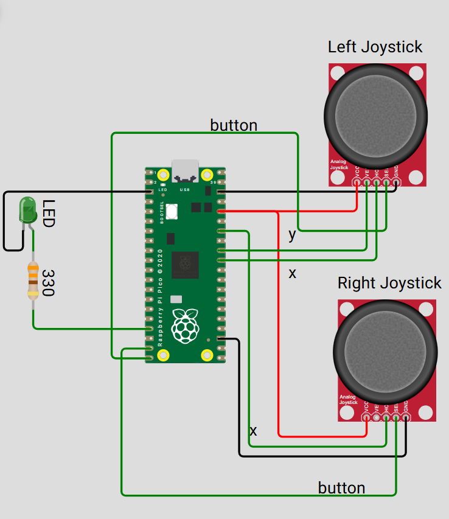

Learning Objectives
- Read analog signals from three ADC pins for real-time servo control
- Use two joystick buttons as digital inputs for system control
- Control multiple servos using smooth sweeping transitions
- Implement a flag-based control mode using button press
- Enhance hardware control robustness using dead zones and initialization logic
Required Components




Step-by-Step Instructions
🔹 Step 1: Connect Your Hardware
- Joystick 1: VRx → GP26 (ADC0), VRy → GP27 (ADC1), SW → GP15
- Joystick 2: VRx → GP28 (ADC2), SW → GP14
- Servos: Base → GP2, Shoulder → GP3, Elbow → GP4, Gripper → GP5
- LED: GP13 (indicator LED)
This wiring allows you to independently control each joint of the robotic arm using the joysticks, while the buttons provide system control and gripper actuation. The LED gives you visual feedback for control mode status.


🔹 Step 2: Import Libraries & Initialize Hardware
Import the required MicroPython libraries and set up all hardware connections for analog, digital, and PWM control.
from machine import ADC, Pin, PWM
from time import sleep
🔹 Step 3: Configure Inputs & Outputs
Set up analog joystick inputs, digital button inputs, LED output, and initialize PWM for all servos.
# === Analog inputs from 3 ADC-capable pins ===
x1 = ADC(26) # Joystick 1 X → Base
y1 = ADC(27) # Joystick 1 Y → Shoulder
x2 = ADC(28) # Joystick 2 X → Elbow
# === Digital input for joystick buttons ===
button1 = Pin(15, Pin.IN, Pin.PULL_UP) # Joystick 1 button (optional)
button2 = Pin(14, Pin.IN, Pin.PULL_UP) # Joystick 2 button → Gripper toggle
# === Digital output for LED feedback ===
led = Pin(13, Pin.OUT)
# === Servo PWM setup ===
base_servo = PWM(Pin(2))
shoulder_servo = PWM(Pin(3))
elbow_servo = PWM(Pin(4))
gripper_servo = PWM(Pin(5))
for servo in (base_servo, shoulder_servo, elbow_servo, gripper_servo):
servo.freq(50)
🔹 Step 4: Helper Functions for Servo Control
Define functions to convert angles to PWM, move servos, sweep smoothly, and reset all servos to neutral positions.
# === Helper function to convert angle to duty cycle ===
def angle_to_duty(angle):
min_us = 500
max_us = 2500
us = min_us + (max_us - min_us) * angle 80
return int(us * 65535 000)
# === Move servo to given angle ===
def move_servo(servo, angle):
servo.duty_u16(angle_to_duty(angle))
def sweep_to_angle(servo, current_angle, target_angle, delay=0.01):
"""Smooth sweep servo from current to target angle."""
step = 1 if current_angle < target_angle else -1
for angle in range(current_angle, target_angle + step, step):
move_servo(servo, angle)
sleep(delay)
return target_angle
def reset_all_servos():
"""Set all servos to initial neutral positions."""
global base_angle, shoulder_angle, elbow_angle
base_angle = sweep_to_angle(base_servo, base_angle, 0)
shoulder_angle = sweep_to_angle(shoulder_servo, shoulder_angle, 0)
elbow_angle = sweep_to_angle(elbow_servo, elbow_angle, 0)
sweep_to_angle(gripper_servo, 0 if gripper_open else 100, 0 if gripper_open else 100)
🔹 Step 5: Dead Zone, State Tracking, and Initialization
Set up dead zone for analog input, track servo angles and button states, and reset all servos at startup.
# === Dead zone for analog input ===
center = 32767
dead_zone = 2000
# === Track current angles and gripper state ===
base_angle = 0
shoulder_angle = 0
elbow_angle = 0
gripper_open = True
button1_flag = False
button1_last = 1
button2_flag = False
# === Reset servos to initial positions ===
reset_all_servos()
🔹 Step 6: Main Control Loop
Continuously check button and joystick states, toggle control mode, reset servos, and move each joint or gripper as needed.
# === Main control loop ===
while True:
# Toggle button1 flag on rising edge
if button1.value() == 0 and button1_last == 1:
button1_flag = not button1_flag
led.value(button1_flag) # LED indicates control mode ON/OFF
print("Button 1 pressed. Toggle mode:", button1_flag)
reset_all_servos() # Reset servos every toggle
sleep(0.2) # Debounce delay
button1_last = button1.value()
if button1_flag:
x1_val = x1.read_u16()
y1_val = y1.read_u16()
x2_val = x2.read_u16()
print(f"x1 value : {x1_val} -- y1 value : {y1_val} -- x2 value : {x2_val}")
# === Base control ===
if abs(x1_val - center) > dead_zone:
target = int(x1_val * 180 / 65535)
base_angle = sweep_to_angle(base_servo, base_angle, target)
# === Shoulder control ===
if abs(y1_val - center) > dead_zone:
target = int(y1_val * 180 / 65535)
shoulder_angle = sweep_to_angle(shoulder_servo, shoulder_angle, target)
# === Elbow control ===
if abs(x2_val - center) > dead_zone:
target = int(x2_val * 180 / 65535)
elbow_angle = sweep_to_angle(elbow_servo, elbow_angle, target)
# === Gripper toggle with button 2 ===
if button2.value() == 0 and not button2_flag:
gripper_open = not gripper_open
angle = 0 if gripper_open else 100
sweep_to_angle(gripper_servo, 0 if not gripper_open else 100, angle)
button2_flag = True
elif button2.value() == 1:
button2_flag = False
sleep(0.05)
📺 Complete Tutorial Video
Quick Recap
- ✅ Dual joystick, multi-DOF manual control with safety features
- ✅ Button 1 toggles control/reset, Button 2 toggles gripper
- ✅ Dead zones and smooth sweeping for robust, jitter-free operation
- ✅ LED indicator for visual feedback
🎯 What’s Next?
Try recording and replaying your robot’s motions, or add more feedback and safety features for advanced projects!